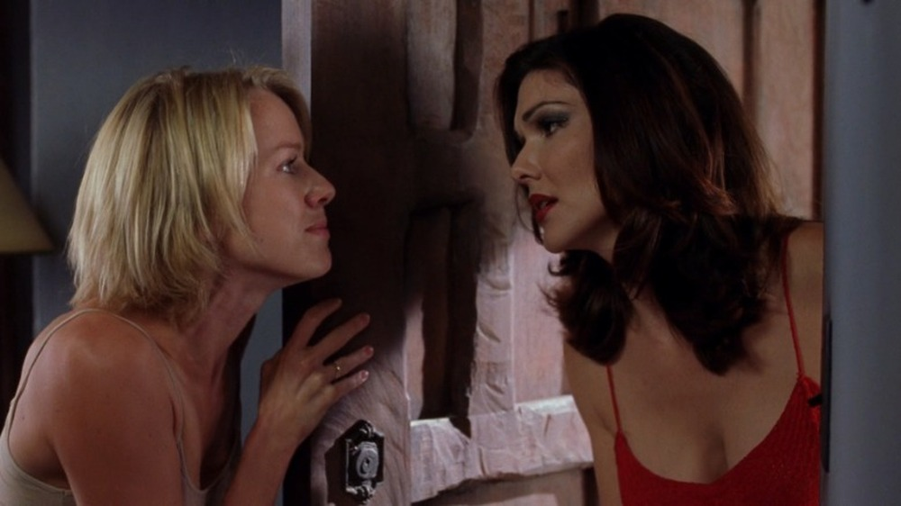

Mulholland Drive is considered one of the most best films in cinema history. Mulholland Drive's commentary on Hollywood corruption and politics opened eyes for many audiences around the world. Lynch's nonlinear form of storytelling also caused many to be confused and unreceptive to what the film was portraying. But this didn't stop David Lynch from impacting many across the world.
May Have Changed TV

David Lynch along with Mark Frost created Twin Peaks, which is considered one of the most important TV shows in the history of TV. Without Twin Peaks we would not have The Sopranos, Hannibal, True Detective, etc. Without Twin Peaks later TV shows would not be able to portray serious stories, themes, and character-based stories. Twin Peaks led the wave for television series to be taken serious as real art besides movies. Mulholland Drive was originally created to be Twin Peaks, Lynch created a short pilot for Mulholland Drive, which would be a spin off to the character Audrey Horne, but the studio was not a fan so he switched his ideas over to create Twin Peaks. But later on Studio Canal funded the film to be created as a full feature film. Without the idea of Mulholland Drive we not have gotten Twin Peaks which would later create this new era of television.
LGBTQ Representation
Mulholland Drive at its core is a love story between Betty & Rita. The fact that a classic, that had won many awards, in cinema history is revolved around two women loving each other is huge. Many women felt connected to the characters and felt represented during a time where being gay was still not the norm and was seen as taboo. As many pretend it is not a lesbian movie, those who feel the deep peronal connection will tell you otherwise. A film this big having this representation and not presenting it as some horrible thing, is huge for other filmmakers to dive deep into these subjects and not shy away from it.